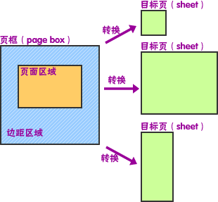
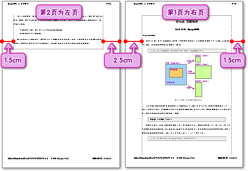

在CSS 2.1中，只有margin属性（包括4个方向和缩写属性）可以应用在页面上下文（page context）中。纸张、页框和页边距的关系如图14-1所示。
提示：关于margin属性，请参见本书[8.9 边距：margin属性]一节。
图14-1 纸张、页框和页边距的关系
可以使用@page规则设定页框的边距。@page规则以“@page”关键字开始，后面是页面选择器（可选），然后是声明块。页面选择器指定了声明所适用的页面，在CSS 2.1中，通过页面选择器可以设置第一页、所有左边的页或者所有右边的页。例如：
@page { margin: 3cm; }
值得注意的是，页框（或者说页面上下文）和字体没有关系，因此不能使用“em”和“ex”单位来定义边距区域或者页面区域。百分比值的计算则是基于页框的尺寸，左右边距以页框的宽度为基数，而上下边距以页框的高度为基数。当然，还可以使用“in”、“cm”等绝对单位。
提示：关于绝对单位，请参见本书[5.3.2 长度单位]一节。
由于负的边距值（页框或者元素的），或绝对定位的缘故，内容可能会在页框之外，但是这样的内容会被“剪切”掉——用户端、打印机或者最后由裁纸机来完成。 如果一个页框不匹配目标页的尺寸，用户端可以选择：
如果页框小于目标页尺寸，用户端可以自由地在页上放置页框。不过，推荐的方法是将页框放置在页的中央，因为这样做有利于对齐双面的页，也避免了错误丢失那些打印在靠近页边的信息。
当文档需要双面打印的时候，左页和右页的页框可能会不同。例如要留出装订线的位置，因此右页的左边距需要宽一些，对应到左页，则应该是右边距宽一些。通过CSS的页面选择器中的:left和:right伪类，可以完成这个需求。
提示：书籍的第1页是从右页开始的。
所有的页都自动地被用户端归为:left或:right伪类。例如如下代码，其效果如图14-2所示。
<style type="text/css" media="print">
<!--
@page :right{
margin: 2cm 1.5cm 2cm 2.5cm;
}
@page :left{
margin: 2cm 2.5cm 2cm 1.5cm;
}
……
-->
</style>
<body>
……
</body>
图14-2 利用:left和:right伪类为设置不同的边距